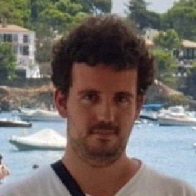

CURRICULUM VITAE
Datos Personales

Mikel Arina Marcos
02/12/1992 - Madrid
08860 Castelldefels (Barcelona)
696 87 25 13 - mikel.arina.marcos@gmail.com
Idiomas
| Idioma | Nivel bajo | Nivel medio | Nivel alto | Nativo |
|---|---|---|---|---|
| Català | X | |||
| Castellano | X | |||
| English | X |
Estudios
-
Bachillerato tecnológico
Col·legi Santo Angel (Gavà). -
Grado en Ingeniería Telemática
Universitat Politècnica de Catalunya (UPC).
Laboral
-
Profesor de programación y robótica (Gavà, 2021 - Actualidad)
Profesor de una extraescolar de programación y robótica a niños y jóvenes. -
Entrenador de fútbol (Gavà, 2012 - Actualidad)
Entrenador de fútbol formativo en diferentes niveles desde los 6 a los 18 años.